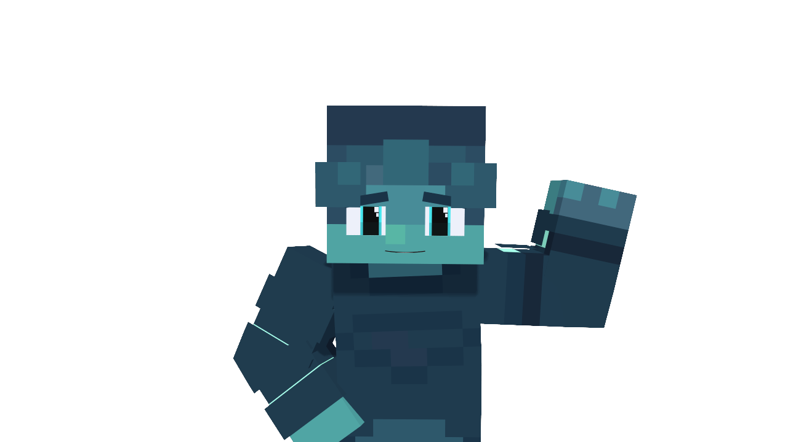

Squiblerb
Discord/Realms Moderator
Bio
Resident Squid, Horrible at all aspects of Minecraft yet still plays XD, Math addict, A Femboy Catboy, Makes Minecraft Animation Renders, in University for Marine Ecology.
Important Info
Pronouns: He/They/She
Nationality: Floridean (we are our own nation, get used to it)
Profession: Minecraft Psychological Torture Machine(Mazes) Creator
Discord: dafemboysquid (id: 1433157831548211201)
Special Facts
Hates people that eat calamari
Is furry
Links
No socials/links provided.